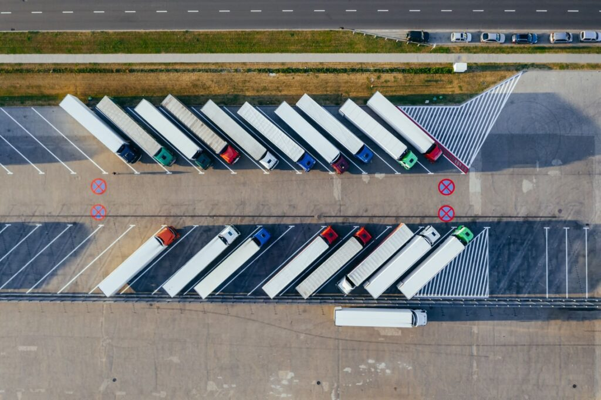
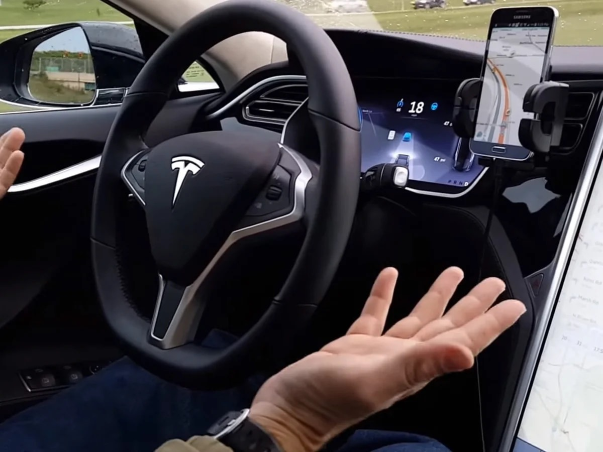
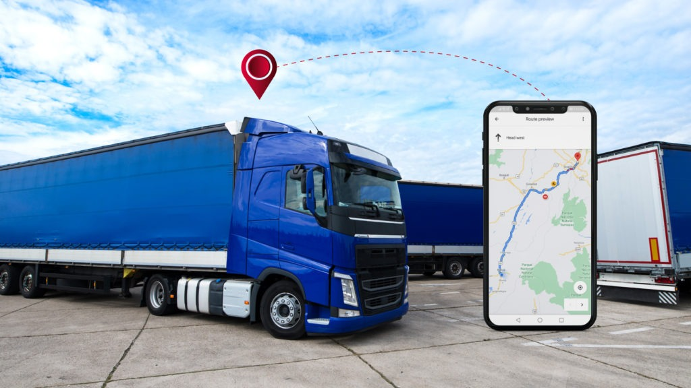

"IoT" es el proceso que permite conectar los elementos físicos cotidianos al Internet: desde los objetos domésticos comunes,como las bombillas de luz, hasta los recursos para la atención de la salud, como los dispositivos médicos. Los dispositivos del IoT que se encuentran dentro de esos objetos físicos suelen pertenecer a una de estas dos categorías: son interruptores (es decir, envían las instrucciones a un objeto) o son sensores (recopilan los datos y los envían a otro lugar).
Son sistemas de dispositivos físicos que reciben y transfieren datos a través de las redes inalámbricas, con poca intervención humana. Por ejemplo, un termostato inteligente (es decir, que utiliza el IoT) recibe los datos de la ubicación de su automóvil inteligente, y ambos dispositivos conectados le permiten ajustar la temperatura de su casa a pesar de que no se encuentre allí. El funcionamiento de los sistemas de IoT tradicionales consiste en enviar, recibir y analizar los datos de forma permanente en un ciclo de retroalimentación. Según el tipo de tecnología de IoT, las personas o los sistemas de inteligencia artificial y aprendizaje automático (IA/ML) pueden analizar estos datos casi de inmediato o durante cierto tiempo.
1. Sistemas de seguimiento de inventario
Una de las principales aplicaciones del internet de las cosas en la industria, son los sistemas de seguimiento de inventario que ayudan a los gerentes de logística a planificar el reabastecimiento y las distribuciones de la mercancía. Gracias a los sensores conectados en las aplicaciones de IoT para la logística, los responsables de la cadena de suministro, pueden garantizar que los productos se almacenen de manera segura, ahorrar tiempo al poder ubicar instantáneamente un artículo necesario y minimizar los errores humanos.
2. Vehículos automatizados
El uso del IoT en los automóviles también es otra gran aplicación de el Internet de las cosas en la cual se usa Inteligencia Artificial y los datos, Mapeos de las ciudades en internet para permitir al carro de forma autónoma movilizarse.
3. Tecnología Blockchain y embarque digita
Cuando se combinan las aplicaciones del Internet de las Cosas con la tecnología Blockchain, es posible lograr el embarque digital. Esto permite que una empresa y sus clientes rastreen los productos durante la entrega.El embarque digital es uno de los muchos componentes dentro de las soluciones de contrato inteligente facilitadas por la combinación de tecnologías IoT y Blockchain. Junto con sensores y rastreadores GPS, estas soluciones permiten el monitoreo constante durante todo el proceso de entrega. Esto le permite tanto a la empresa como al cliente un seguimiento de la ubicación del producto.
Capacidad de conectarse a la red:
La principal ventaja que ofrece el IoT es la capacidad de conectarse a Internet y, en consecuencia, tener acceso a todo lo que esto supone. Por ejemplo, cuando una televisión se conecta a la red para obtener los contenidos que vamos a ver.
Intercambio de información de forma rápida y en tiempo real:
Otra de las ventajas del IoT es que el intercambio de información se realiza de forma rápida y en tiempo real, lo que tiene muchas aplicaciones diferentes. Por ejemplo, en el sector de la seguridad. Gracias al IoT, se avisa a la policía o a los bomberos de forma automática cuando se detecta un problema de intrusión o un incendio en un espacio controlado.
Ahorro energético:
Otra ventaja muy importante que ofrece el IoT es el ahorro energético. Al monitorizar y automatizar los procesos, estos se llevan a cabo de forma mucho más controlada, lo que repercute en un menor consumo y, en consecuencia, en un mayor ahorro. El mejor ejemplo lo encontramos en la automatización de la climatización de los hogares y otros inmuebles. Cuando la climatización es controlada por dispositivos con IoT, se sincronizan con la temperatura y condiciones climatológicas exteriores, lo que conlleva un uso más adecuado de los recursos disponibles.
Procesos más sostenibles:
De la misma forma que el IoT permite un mayor ahorro al favorecer un mejor uso de los recursos, esto también conlleva una mayor sostenibilidad, ya que se utilizan solo los recursos que son realmente necesarios. El mejor ejemplo, de nuevo, lo encontramos en la climatización.
Comunicación con el entorno directo:
Otra de las ventajas es que el IoT permite la comunicación directa con el entorno más cercano. Por ejemplo, podemos abrir y cerrar puertas desde nuestro teléfono celular, o podemos recibir información útil dependiendo de cuál sea nuestra posición geolocalizada en cada momento.
La información no se encuentra cifrada:
Una de las principales desventajas que ofrece el IoT es que la información no está cifrada y, en consecuencia, resulta muy sencillo acceder a ella. Esto puede implicar problemas relacionados con la seguridad digital, ya que el sistema podría ser hackeado. Por ejemplo, para el robo de datos.
Requiere de una inversión previa en tecnología:
Otra de las desventajas del IoT es que requiere una inversión previa para que pueda funcionar. Es decir, necesitamos adquirir los dispositivos con la tecnología necesaria para que se puedan conectar a Internet.
Reducción de la intimidad:
Otro de los problemas que puede llegar a plantear el uso de objetos con tecnología IoT es la reducción de la intimidad. Estos dispositivos abren espacios privados al espacio público, por lo que pueden llegar a plantearse problemas serios en este sentido. Por ejemplo, mediante la instalación de sistemas de seguridad como cámaras de vigilancia que no sean usadas de forma correcta.
Brecha tecnológica:
Así mismo, otra de las desventajas que plantea el uso de la tecnología IoT es que profundiza en la brecha digital. Es decir, el problema de qué personas sí que pueden acceder a esta tecnología y cuáles no. Esto es especialmente notable cuando se compara el acceso a Internet entre distintos países, así como entre entornos urbanos y el medio rural.
Falta de compatibilidad:
Finalmente, otra de las principales desventajas de la tecnología IoT es la falta de compatibilidad entre algunos dispositivos. Los sistemas IoT no están estandarizados y, en consecuencia, se podría dar el caso en el que determinados dispositivos no puedan trabajar de forma conjunta entre sí a pesar de estar diseñados para la misma función.